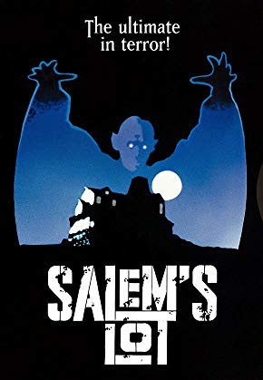
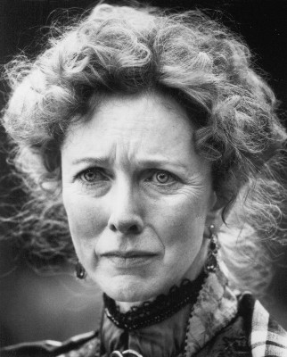

#9074 Brennen muß Salem
Alternativ: Salem's Lot
 
 IMDB-Wertung: 6.8 / 10
IMDB-Wertung: 6.8 / 10  Metascore: 0
Metascore: 0 
The successful writer Benjamin "Ben" Mears returns to his hometown Salem's Lot, Maine, expecting to write a new novel about the Marsten House. Ben believes that the manor is an evil house that attracts evil men since the place has many tragic stories and Ben saw a ghostly creature inside the house when he was ten. Ben finds that the Marsten House has just been rented to the antique dealers Richard K. Straker and his partner Kurt Barlow that is permanently traveling. Ben meets the divorced teacher Susan Norton that is living with her parents and they have a love affair. Ben also gets close to her father Dr. Bill Norton and his former school teacher Jason Burke. When people start to die anemic, Ben believes that Straker's partner is a vampire. But how to convince his friends that he is not crazy and that is the truth?
Jahr: 1979
Dauer: 183 Minuten
FSK: 16
Land: USA Studio: CBSTonspuren:
Untertitel: Deutsch,
Auflösung: 1080p (1488x1080) Größe: 12288 MB
Genre: Horror
Regisseur:  Tobe Hooper
Tobe Hooper
Drehbuch: Stephen King
Soundtrack: Harry Sukman
Darsteller:
 David Soul als Ben Mears
David Soul als Ben Mears James Mason als Richard K. Straker
James Mason als Richard K. Straker- Lance Kerwin als Mark Petrie
 Bonnie Bedelia als Susan Norton
Bonnie Bedelia als Susan Norton Lew Ayres als Jason Burke
Lew Ayres als Jason Burke- Julie Cobb als Bonnie Sawyer
 Elisha Cook Jr. als Gordon 'Weasel' Phillips
Elisha Cook Jr. als Gordon 'Weasel' Phillips George Dzundza als Cully Sawyer
George Dzundza als Cully Sawyer- Ed Flanders als Dr. Bill Norton
- Clarissa Kaye-Mason als Majorie Glick
 Geoffrey Lewis als Mike Ryerson
Geoffrey Lewis als Mike Ryerson Kenneth McMillan als Constable Parkins Gillespie
Kenneth McMillan als Constable Parkins Gillespie Fred Willard als Larry Crockett
Fred Willard als Larry Crockett- Marie Windsor als Eva Miller
-  Barbara Babcock als June Petrie
 Bonnie Bartlett als Ann Norton
Bonnie Bartlett als Ann Norton- Joshua Bryant als Ted Petrie
- Brad Savage als Danny Glick
- Ronnie Scribner als Ralphie Glick
- Reggie Nalder als Kurt Barlow (uncredited)
- Barney McFadden als Ned Tebbets
- James Gallery als Father Donald Callahan
- Robert Lussier als Deputy Constable Nolly Gardner
- Ned Wilson als Henry Glick
- Mara Cook als Nurse (uncredited)
- Ernest Phillips als Royal Snow (uncredited)
Datei: X:\Person\Stephen King\Brennen muß Salem (1979, FSK16, 1488x1080).mkv seit 19.07.2018
Festplatte: HD Collection-7+mehr(A-Z)+Person
 Es gibt insgesamt 44 Filme in der Gruppe 'Person\Stephen King'
Es gibt insgesamt 44 Filme in der Gruppe 'Person\Stephen King'